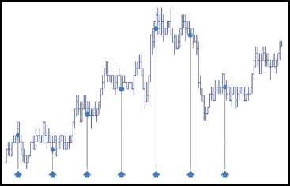
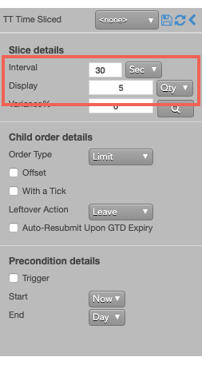
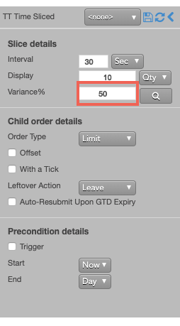
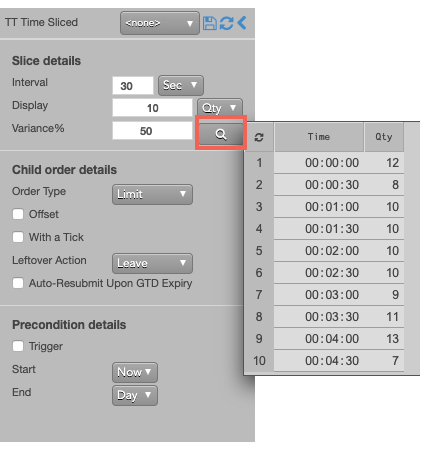
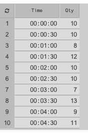
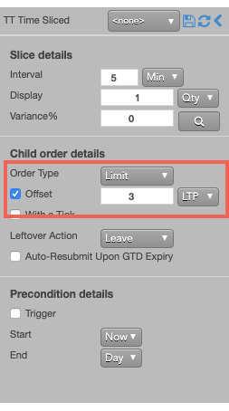
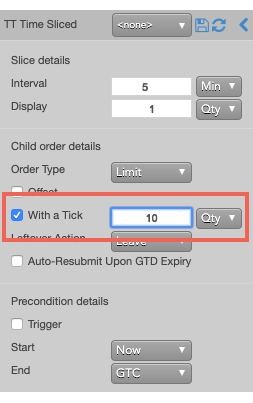

A TT Time Sliced order slices a large quantity order into smaller disclosed quantity orders. Child order portions are sent to the market at fixed time intervals. The resting portion might not be filled before it is time to disclose the next portion.

Behaviors
The following examples illustrate how you can configure a TT Time Sliced order with different behaviors for the child and parent orders. Also, each example shows how the order will appear in MD Trader.
-
Defining the behavior of each child order slice
-
Specifying the price at when child orders are entered
-
Setting preconditions for the parent order
Setting the interval and quantity for each child order
When configuring a TT Time Sliced order, you need specify how frequently you want the parent order to submit a child order and at what quantity. Based on the specified interval, display quantity and the parent order quantity, the TT Time Sliced parent order, calculates the number of child order slices it will need to submit. It divides the total parent order quantity by the slice display quantity to determine the number of slices; then it submits each sliced order at the specified interval.
To specify the inverval and quantities of child orders:
-
Enter the length of time for each interval and select the time unit from the dropdown. You can chose the following time units:
-
Min (minutes)
-
Sec (seconds)
-
ms (milliseconds)
-
Enter the Display quantity and select the type of quantity (Qty or %) from the dropdown.

If you entered a 50-lot order with these settings, the TT Time Sliced parent order would submit one 5-lot order every 30-seconds for a total of 10 order slices.
Varying the quantities of the child order
Instead of submitting a fixed quantity for every child order you can use a variance to increase or reduce the quantity of each child order by a random amount. This amount uses a percentage of the disclosed quantity as its threshold.
To vary the disclosed quantity by a percentage of the order size:
-
Set the desired Display quantity. This quantity becomes the base quantity for calculating variance.
-
Set the Variance and select % from the dropdown. This example sets the variance to 50%, so each child order could have an order quantity within 50% (+/- 5) of the base disclosed quantity.

-
To see a proposed distribution of the child orders, click
 . Note: You must specify the order quantity to see the distribution.
A flyout shows the quantity of each child order that will be sent when you submit the parent order.
. Note: You must specify the order quantity to see the distribution.
A flyout shows the quantity of each child order that will be sent when you submit the parent order.

If you want to change the proposed distribution, you can continue to click until you see a distribution you like.

Note: If you do not display the variance, or if you make any order change after displaying the variance distribution, the TT Iceberg parent order will submit its child orders with random quantities within the specified variance until the total order quantity has been filled.
-
Submit the order at the desired side and price.
If you entered a 100 lot oder with these settings, the TT Time Sliced parent order would submit an order for the first quantity (10). Then, a new child order would be entered at the indicated time and quantity until all of the slices were submitted.
Setting the type and price of the child order
At the specified intervals, the TT Time Sliced parent order will submit native child orders to the market at a specified type and price. You can choose the following types of native order to use when entering child orders at the specified interval.
-
Market order
-
Limit order
You can choose to use same price as the parent order for each child order or to use a price offset based on the market at the time each child order is entered.
-
Market Limit Market (MLM) order
To configure the type and price of each child order:
-
In the Slice details section, configure the slices as desired.
-
In the Order Type dropdown, select the desired order type for the child orders.
If you select Limit, you can optionally specify enter a child order at a relative price using an offset.

With this setting, each child order will be entered at a price level three ticks away from the LTP at the beginning of the slice interval.
Setting a leftover action to handle unfilled orders when a slice ends
When it is time to enter the next child order slice, the TT Time Sliced parent order needs to know what to do if the current child order slice is not fully filled. When you submit child orders with the Limit order type, you can specify a leftover action, which lets you either reprice the resting order using payup ticks or leave the resting child order portion in the market.
-
Configure the Slice details as desired.
-
From the Order Type dropdown, select Limit.
The Leftover Action section is exposed in the flyout.

-
Choose one of the following:
-
Leave
-
Payup; then specify a positive or negative number of Payup Ticks.

The following example illustrates using payup ticks.

Aggressing the price of a working child order based on market conditions
You can also apply With-A-Tick functionality to the child orders. This feature automatically gives traders the ability to work an order at one price and automatically pay up one tick based on changes in market liquidity. It re-prices the child order one tick toward the market when the quantity available at the opposite drops below a user-defined threshold.
To configure each child order to pay-up one tick if the available quantity on the opposite side of the market drops below 10, you would use the With a Tick feature as follows.
-
Specify the desired quantity and price settings.
-
Enable With a Tick, set the value to 10 and select Qty from the dropdown.

{% include tto-wat-params.html %}
{% include tto-static-trigger-params.html %}
{% include tto-trailing-trigger-params.html %}
{% include tto-time-params.html %}
TT Time Sliced order parameters
Slice details parameters
- {% include Parameters/Interval_Details.html %}
- {% include Parameters/DisplayedQuantity_Details.html%}
Child order details
- {% include Parameters/ChildOrderType_Details.html%}
- {% include Parameters/OffsetTicks_Details.html %}
- {% include Parameters/WithATick.html %}
- {% include Parameters/LeftoverAction_Details.html%}
- {% include Parameters/PayupTicks_Details.html%}
- {% include Parameters/AutoResubmit_Details.html %}
Precondition details
- {% include Parameters/TriggerType_Details.html%}
- {% include Parameters/TriggerPrice_Details.html%}
- {% include Parameters/TriggerType_Details.html%}
- {% include Parameters/TrailOffset.html%}
- {% include Parameters/StartTime_Details.html %}
- {% include Parameters/EndTime_Details.html %}
- {% include Parameters/EndTimeAction_Details.html %}